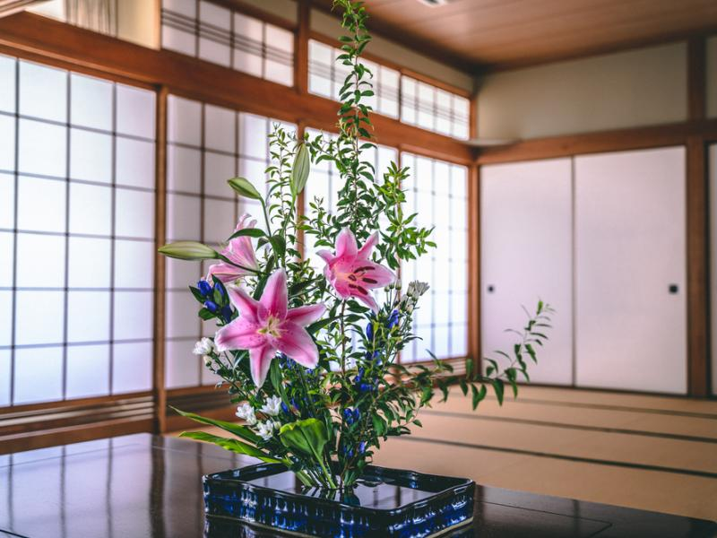

Bienvenue sur Ikebana
Découvrez l’art floral japonais dans toute sa finesse et sa spiritualité.
Sur notre site, nous vous proposons des créations uniques, réalisées avec soin dans le respect
de la tradition japonaise, pour apporter harmonie à votre intérieur.
Que vous soyez passionné(e) d’art japonais, à la recherche d’un cadeau raffiné ou simplement
curieux de découvrir une nouvelle forme d’esthétique, vous êtes au bon endroit.
🌿 Laissez-vous inspirer, élevez votre quotidien.
